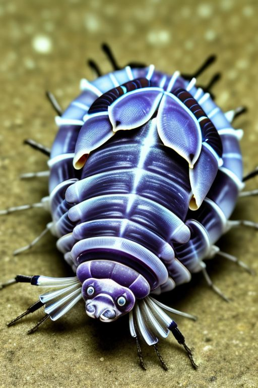
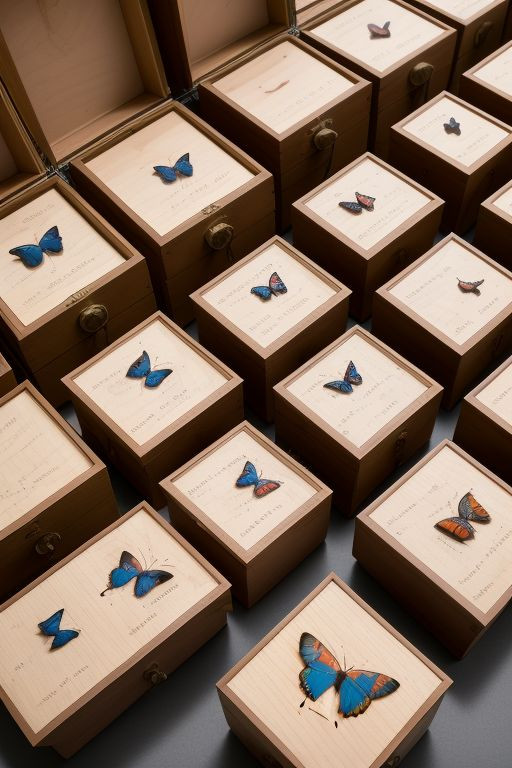
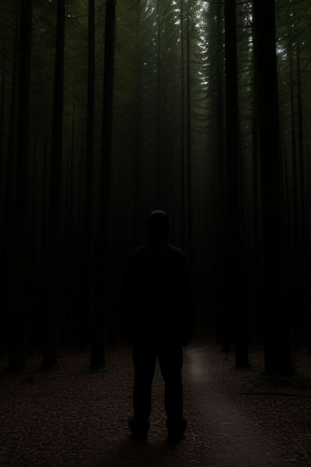
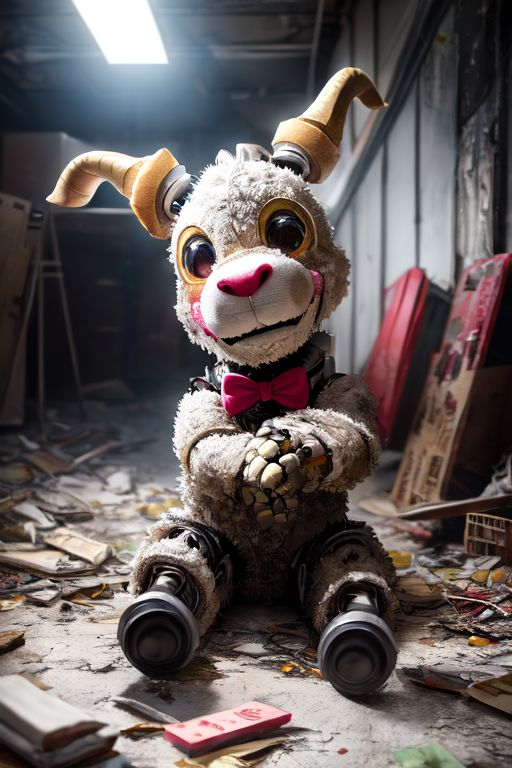

Falsautim
The entity under investigation remains largely unidentified, and available data on its nature and behavior is limited. Preliminary observations suggest that this creature exhibits specific predatory tendencies, targeting a singular individual at a time. The underlying reasons for its selection of a target are still unclear, and the methods by which it executes its attack remain poorly understood.
Behavior:
The creature appears to focus on one individual, pursuing them until the target is neutralized or otherwise removed. After the attack, the entity demonstrates a remarkable ability to mimic the appearance of the victim, effectively disguising itself as the target. The mechanisms by which the entity achieves this transformation remain unknown, as do the biological processes involved in this behavior.
Once the entity has assumed the form of the victim, it proceeds to adopt behaviors and actions resembling those of the individual it has imitated. It will continue this mimicry until it identifies a new target to pursue. At this point, it shifts focus and initiates the cycle once again. The duration for which it maintains the disguise is unclear, but there are indications that the mimicry is not flawless.
Physical and Temporal Anomalies:
While the creature’s true appearance remains unknown, it is hypothesized that the disguise is not perfect. Over time, the appearance of the entity may begin to degrade, with the mimicry becoming increasingly distorted or "off," suggesting instability in the disguise. This deterioration could manifest as an unnatural or "strange" physical appearance that may trigger suspicion or alert others to the entity’s true nature.
Additionally, there is evidence to suggest that the entity may retain partial memories or characteristics of the individual it has imitated. This ability, while not fully understood, could potentially enhance its capacity to deceive those around it, as the entity may be able to adopt behaviors or knowledge specific to the victim.
Documentation and Current Status:
Currently, the only known documentation of this entity is a single video recording, which provides limited insight into its behavior and characteristics. The authenticity of the video has not been called into question, though further footage or corroborating evidence remains elusive. At present, no additional information has been located that could further explain the creature’s origins, abilities, or motivation.
Conclusion:
The creature remains a subject of ongoing investigation. Its predatory nature, ability to mimic its victims, and potential to retain partial memories of its targets present significant challenges to our understanding. The incomplete nature of the available data, along with the entity’s apparent ability to disguise its true form, complicates efforts to identify and contain it. Further study and more extensive documentation are required to shed light on its full range of capabilities and its underlying nature.

Gas-Like-Creature
Occasionally, individuals report perceiving unusual, unexplained odors—perhaps a scent of lavender while working in an office, or the distinct aroma of birthday cake while walking through a downtown area. These peculiar smells may, in some cases, be attributed to a phenomenon known as GLC swarms.
Behavior
GLC are primarily decomposers, subsisting on decaying organic plant matter. As a result, they play a crucial role in nutrient cycling within their ecosystem. Due to their metabolic efficiency, GLC can survive for extended periods without consuming food, as their caloric expenditure is minimal. The mass of a swarm often carries a detectable scent—typically that of decaying plant material—which accounts for the unexpected and mysterious odors reported in areas where GLC are present. These creatures, while harmless to humans, are frequently the undetected source of such odors, making them the likely culprits for otherwise unidentifiable smells.
Characteristics and Appearance:
GLC are diminutive Isopods, among the smallest known organisms in the world, averaging a size of only 0.12 millimeters. Due to their minuscule size, they congregate in large swarms, typically numbering around 16,000 individuals per group. These swarms are not bound by conventional locomotion; instead, GLC utilize air currents, both large and small, to travel. Their low mass and size allow them to remain suspended in the atmosphere, often moving with the slightest breeze.
GLC are nearly invisible to the naked eye, given their small size. However, with the aid of modern magnification technologies, they have been observed to exhibit a faint bluish-purple hue. Their bodies are predominantly transparent, adding to their elusive nature. Morphologically, they closely resemble Isopods, though their ability to float through the air distinguishes them from their aquatic relatives, highlighting a fascinating divergence in evolutionary adaptation.
Conclusion:
In summary, GLC swarms represent an intriguing ecological and biological phenomenon. These creatures, though nearly undetectable to the naked eye, have a significant impact on their environment by decomposing organic matter and contributing to the diffusion of scents into the surrounding air. Should one encounter an unusual odor, it may be worth considering the presence of a GLC swarm. However, in cases of extreme concern, it remains prudent to contact the relevant authorities for further investigation.
Vaculobe (Vasculisphaera)
The organism described can be considered a highly unique and bizarre deep-sea creature that exhibits an unusual combination of anatomical and behavioral features, making it one of the most extreme examples of adaptation to the abyssal zone. Resembling a whale in scale, this organism can be described as a "Vein Whale" due to its structure, which is primarily composed of a vast network of mammalian-like blood vessels. These veins, akin to those found in large terrestrial mammals such as elephants, are arranged into a near-perfect spherical form. This spherical body is an adaptation to the extreme environment in which it lives—approximately 2,500 meters below the ocean's surface, where immense pressure, cold temperatures, and complete darkness prevail.
Behavior:
The Vein Whale exhibits a highly specialized feeding strategy, akin to organisms like hagfish or Venus flytraps, which rely on direct contact with prey for nutrient intake. The acidic membrane enveloping the creature facilitates this process, likely breaking down or absorbing organic material upon contact. This touch-based feeding mechanism suggests that the Vein Whale has evolved to thrive in an environment where food is scarce and the ability to actively capture or chase prey would be disadvantageous.
Characteristics and Appearence
The Vein Whale is almost entirely made up of a dense mass of veins and blood vessels, lacking traditional skin. Its body is encased in a translucent, acidic membrane that serves both as protection and as a means of nutrient absorption. This membrane allows for a clear view of the creature's internal circulatory system, with the vascular structures visible through the thin barrier. The organism’s spherical shape is disrupted only by specialized appendages, likely fins or flippers, that are capable of expanding through the circulation of blood. These appendages provide the creature with forward momentum, facilitating its movement in the high-pressure environment of the deep ocean. The appendages' ability to expand and contract via blood flow indicates a unique mechanism of locomotion that is crucial for survival in such an inhospitable environment.
A particularly unsettling aspect of the Vein Whale is its auditory capabilities. The creature emits sound waves at frequencies that are so intense that any microphones placed near it are immediately destroyed. These sounds, which are beyond the limits of human hearing, are so powerful that they cause immediate feedback and damage electronic equipment, suggesting that the Vein Whale is capable of producing extremely low-frequency sounds that could be used for communication, navigation, or other unknown purposes in the dark, silent depths of the ocean.
Difficulties:
Efforts to study and recover biological samples from the Vein Whale have been fraught with difficulties. Instruments used in the initial attempts dissolved upon contact with the creature’s acidic membrane, rendering the samples unrecoverable. A third attempt resulted in catastrophic failure, as the sample exploded due to the rapid change in pressure when brought to the surface. These failed recovery efforts underscore the organism’s extreme nature and highlight the challenges of studying life at such depths.
Conclusion:
The Vein Whale represents a highly specialized organism that has evolved in response to the extreme conditions of the deep ocean. Its spherical form, vascular anatomy, acidic membrane, and unusual feeding and sensory mechanisms make it a highly remarkable and deeply unsettling species. The Vein Whale’s adaptation to life at 2,500 meters below sea level suggests a level of biological innovation that challenges our understanding of life in the ocean’s most extreme environments. Despite its unsettling appearance and behavior, the Vein Whale is a testament to the resilience and adaptability of life in the face of some of Earth's most inhospitable conditions. However, its rarity and the extreme challenges associated with studying it ensure that much remains unknown about this creature and its role in the deep-sea ecosystem.
HRMC93
In December of 1993, I found myself experiencing a sense of solitude, prompting me to purchase a few personal gifts for myself. I visited a local mall and explored various stores, eventually entering a Claire’s Accessories outlet. At the rear of the store, I encountered a shelf displaying mugs advertised as "heat-reactive." The packaging provided no specifics about what the mugs would reveal when exposed to heat, further piquing my curiosity. For reasons I could not fully articulate, I decided to purchase one as a gift for myself. The cost was $5.78, and I still possess the original receipt for the transaction.
Characteristics and Appearence
The mug is a heat-reactive item that reveals an image upon the application of hot liquid. The image displayed is uniquely tied to the person who pours the liquid into the mug. When fully revealed, the image depicts the individual pouring the liquid, showing their full body, current attire, and a smiling expression while holding the mug. The image on the mug itself includes a smaller, secondary depiction of the same scene—creating a recursive visual effect. As the image continues to develop, the depiction of the person becomes increasingly distorted and smaller, implying an infinite regress of images within images. Notably, the figure on the mug may occasionally blink, adding an unsettling dynamic to the experience. As the heat dissipates and the mug cools, the image begins to fade, and the person’s smile gradually diminishes before the entire design eventually disappears, leaving the mug blank.
Conclusion:
Upon returning to the store after using the mug for the first time, I was astonished to find that the shelf where the heat-reactive mugs had been displayed was entirely empty. In its place was a blank wall, with no trace of the product line that had previously been present. This strange and seemingly inexplicable occurrence added an additional layer of mystery to the already unusual nature of the mug.
Tuning Beetles
Tuning Beetles are a species of beetle that bear a strong resemblance to Rhinoceros Beetles, with several key distinguishing features. Most notably, Tuning Beetles possess an exceptionally durable exoskeleton and a longer, more pronounced horn. They are also significantly larger, approximately 1.5 times the size of a typical Rhinoceros Beetle.
Behavior:
Tuning Beetles exhibit behavior typical of other beetles but with notable deviations that set them apart. They are solitary creatures, preferring to remain within a defined territory centered around their burrow. This territory typically spans a radius of 0.8 miles in all directions. Within this territory, Tuning Beetles are highly territorial, often driving away smaller fauna and other insects. Larger animals, however, are allowed within their domain, though their presence does not seem to pose a direct threat to the beetles.
Characteristics and Appearance:
Tuning Beetles are large, robust insects characterized by their shiny, iridescent exoskeletons, which provide them with extraordinary protection. The durability of their exoskeleton is remarkable, allowing them to withstand physical stress and damage better than most other beetle species. These exoskeletons are so strong that Tuning Beetles rarely succumb to predation, typically dying only from old age or disease. However, in controlled experiments, the exoskeletons failed to withstand pressures exceeding 2300 pounds, providing insight into their mechanical limitations.
One of the most unique aspects of Tuning Beetles is their ability to emit a high-pitched squealing noise, referred to as their "tuning." This sound is beyond the hearing range of most humans, being imperceptible to those older than three years of age. However, the tuning has significant physiological effects on individuals who are still within the developmental stages of hearing. Humans under the age of three who are exposed to the beetle’s screech experience accelerated hearing degradation, often developing tinnitus by age 12 and becoming profoundly deaf by the age of 44. In addition to its effects on hearing, the tuning also has profound impacts on the surrounding environment. The frequency emitted by Tuning Beetles appears to accelerate the growth of local flora, causing plants to grow at four times their normal rate. This includes the accelerated decomposition of organic material, which can result in visibly altered ecosystems where Tuning Beetles are present. As such, the presence of a Tuning Beetle’s den is often marked by an unusually fast-growing, decomposing flora, making their habitats easily identifiable.
Conclusion:
Tuning Beetles represent an extraordinary example of insect adaptation, combining unique physical characteristics with a sound-based environmental influence. Their extraordinary exoskeleton, territorial behavior, and ability to affect their surroundings make them a subject of significant interest in the study of insect biology and ecology. Despite their formidable traits, they are not invulnerable, and research continues to explore the full extent of their biological capabilities and the effects of their tuning on both the immediate environment and human health.

The Butterfly Collection
The object under consideration is a collection of 52 pinned butterflies, each of distinct species and coloration. Six of these species have not been documented in the wild or through conventional scientific means. The butterflies are preserved within 52 individual wooden oak boxes, each featuring a glass front and a red-cushioned interior. The boxes themselves are marked on the back with dates ranging from February 3rd, 1693, to August 3rd, 1753, suggesting a curated collection over an extended period.
Behavior:
An unusual aspect of this collection, which led to its discovery, is the observed behavior of the butterflies. Despite being enclosed within the boxes for potentially over 300 years, the butterflies were still observed to be flapping their wings. This persistent activity over an extended period suggests that the boxes have some preservation or life-sustaining properties that extend beyond ordinary biological processes.
Characteristics and Appearence:
he 52 boxes in the collection are not notably elaborate in design. A distinguishing feature is the fact that the boxes are constructed without the use of glue, nails, or conventional woodworking joinery. Instead, the boxes remain structurally intact through an unknown method, suggesting an anomalous force at play.
Anomalies:
While the butterflies themselves exhibit no unusual properties, the wooden boxes in which they are stored display significant anomalous effects. Specifically, any biological material placed within the box, provided it fits entirely, is revived or restored to a state of life as long as it remains inside the box. This effect is temporary, as the biological material reverts to its original state, including any decay or deterioration, once removed from the box. The restoration process is limited to the biological material in its entirety. For example, placing a fragment of an organism, such as a wood chip or a human tooth, into the box does not result in the reformation of the complete organism. Consequently, the boxes have not been found to have
Conclusion:
The collection of butterflies and their anomalous boxes present a phenomenon with unexplained properties. While the butterflies themselves do not exhibit anomalous characteristics, the boxes in which they are stored possess the ability to temporarily restore biological material to life, provided it remains inside. This phenomenon is accompanied by several limitations, such as the need for complete biological material and the reversal of restoration once removed. The underlying mechanism behind this effect remains unknown, and further research is needed to determine its origins and potential applications.
The Proxy
The "Proxy" is an anomalous humanoid entity primarily found in wooded areas, where it is believed to hunt lost individuals. Its appearance is described as a blurry, indistinct humanoid figure, and it seems to follow the orders of an external, controlling entity. There are different types of proxies, with more aggressive variants appearing to have stronger interaction with the controlling force. While research is difficult due to the proxy's elusiveness and the remote locations it inhabits, it is speculated that the proxy’s behavior and physical traits may be influenced by this external entity. Continued investigation is needed to better understand the proxy and its origins.
Behavior:
The entity referred to as the "Proxy" is primarily associated with wooded areas, where it is believed to actively hunt individuals who become lost. Its exact nature and origin remain largely unknown, though various reports indicate that it seems to operate under the direction or influence of a separate, unidentified entity. The proxy’s actions and movements suggest that it may be following specific instructions or exhibiting behavior patterns dictated by this external force. There is evidence to suggest that multiple variants of the proxy exist, with distinct behavioral traits observed across different individuals. Some of these variations are notably more aggressive, while others appear less confrontational. The more hostile proxies seem to have a greater degree of interaction or control by the external entity, further suggesting a hierarchical structure or a range of influence.
Characteristics and Appearence:
The proxy entity is typically described as a humanoid figure, though accounts of its appearance remain inconsistent. Most witnesses report seeing it as a blurry, indistinct shadow or figure, often difficult to focus on clearly. It is commonly perceived as a vague humanoid shape, though the lack of clarity in descriptions points to its anomalous nature, potentially influencing the perception of those who encounter it. Due to the elusive nature of the proxy, few physical traits have been definitively identified. Most reports agree that it lacks specific, discernible features, and its presence is often accompanied by a sense of unease or disorientation in those nearby.
Anomalies:
: One of the primary anomalies associated with the proxy is its apparent connection to an external, controlling entity. The proxy seems to operate under some form of guidance, which is most evident in the more aggressive variants, suggesting that these entities may be acting under a more direct or potent influence. This distinction raises questions about the nature of the controlling force, as it could be either an intelligence or a physical entity, or something entirely beyond our current understanding. Furthermore, the proxy's ability to remain elusive and its blurry, indistinct appearance suggest that it may be operating outside normal physical laws, potentially using some form of manipulation over perception or reality. This ability to remain out of sight and yet seemingly follow its prey may be linked to its anomalous, perhaps interdimensional, characteristics.
Conclusion:
Due to the nature of the proxy and its association with remote wooded areas, conducting research in controlled environments has proven to be exceedingly difficult. Efforts to observe or capture data on the entity are hindered by the challenging terrain, the proxy’s evasiveness, and the limited access to areas where it is most commonly found. The existence of multiple types of proxies, each with differing degrees of aggression and control, suggests that further investigation is required to fully understand the scope and nature of this phenomenon. We remain hopeful that a less aggressive variant may be encountered in a more accessible location, allowing for a more comprehensive study. As of now, much remains unknown, but continued research into the behaviors and origins of the proxy entity is essential for a deeper understanding of this anomaly.
Animated Animatronic
An animatronic, originally believed to be a regular mechanical figure, was discovered in an abandoned theme park. The animatronic resembles a goat and exhibits anomalous behavior: it moves and speaks independently, without any external power source. Despite its seemingly broken condition, the animatronic functions in a way that defies normal mechanical operation. Attempts to study or observe it have resulted in the animatronic ceasing all activity, raising questions about its function and the potential influence behind its movements.
Behavior:
The animatronic exhibits self-sustaining movement and vocalization despite the absence of a conventional power source. It operates autonomously, performing actions such as walking and speaking without any observable external stimulus. However, when it is being directly observed or studied, it shuts down completely, halting all movement and vocal functions. This behavior suggests the presence of an unknown factor that causes it to deactivate when under scrutiny, indicating a potential resistance to observation.
Characteristics and Appearence:
The animatronic is constructed to resemble a goat, with mechanical limbs, facial features, and vocal apparatus typically found in animatronics. However, its design appears to have deteriorated over time, likely due to the abandonment in the theme park. Despite its outwardly broken state, it continues to exhibit life-like behaviors, such as speech and independent movement, which is atypical for animatronic figures that generally rely on external power sources or remote control.
Anomalies:
The primary anomaly lies in the animatronic's ability to function without any identifiable power source, which is inconsistent with typical animatronic technology. It is unclear how the figure generates the energy necessary for its movement and speech, as it shows no signs of traditional wiring or power supply. Additionally, the animatronic's tendency to deactivate when under observation suggests the presence of an unknown mechanism or force that actively interferes with any attempt to study it, further complicating research. This suggests that its behavior may not be purely mechanical but possibly influenced by an anomalous or unexplained phenomenon.
Conclusion:
The animated animatronic presents a significant mystery due to its autonomous movement and vocalization despite being in a seemingly broken state with no clear power source. Attempts to observe or study it result in its complete cessation of activity, hinting at the presence of an unknown force or influence that controls its behavior. Further investigation is required to understand the underlying mechanisms that allow it to operate and the reasons behind its shutdown when observed. The nature of its anomaly remains unexplained, making it a subject of significant interest for future research into potentially paranormal or uncharted phenomena.
